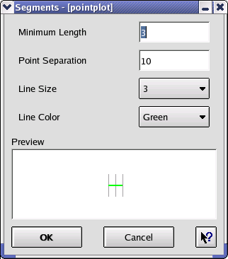

Engauge Digitizer - Segments Dialog
Engauge Digitizer - Segments Dialog
Engauge Digitizer - Segments Dialog
Engauge Digitizer - Segments DialogThe segments dialog controls how Segment Fill is applied to line graphs. You can control:
A line in the processed image is a candidate for segment fill if it is longer than the specified minimum segment length. Clicking on that segment will then cause points to be created along that line, separated by the specified point separation.
The preview window displays the current settings.
An example of a segments dialog is shown below:
